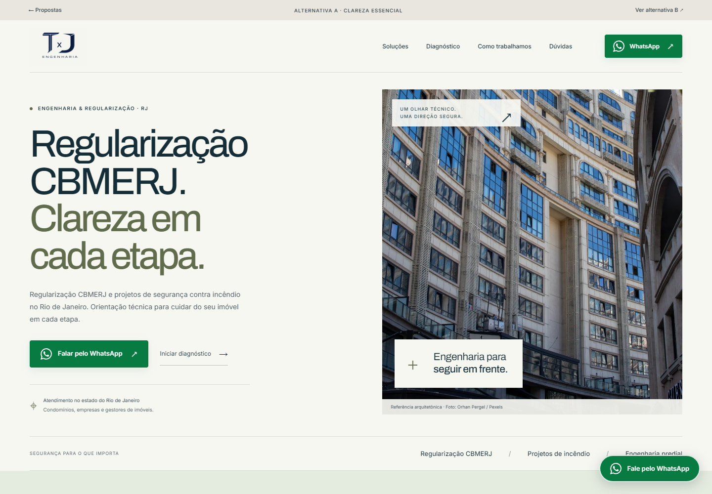
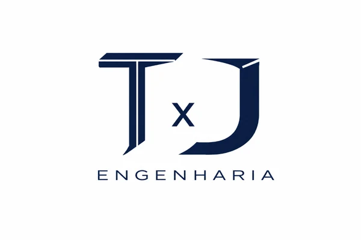
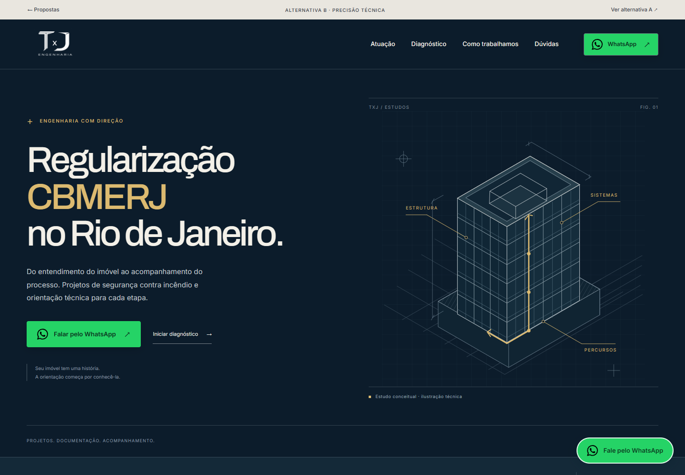

A
Clareza essencial
Clara, editorial e próxima. A arquitetura ganha espaço, com leitura tranquila e um caminho direto para o atendimento.

ESTUDO VISUAL / HOMEPAGEOUTUBRO 2026DUAS DIREÇÕES. UMA MESMA ESSÊNCIA.
Duas formas de comunicar competência técnica, segurança e clareza. Explore as homepages completas e escolha a direção para a próxima etapa.
Prévias locais · Desktop e celular · Sem publicação
Clara, editorial e próxima. A arquitetura ganha espaço, com leitura tranquila e um caminho direto para o atendimento.

Institucional, expressiva e técnica. O desenho arquitetônico e o contraste profundo destacam o universo da engenharia.
O QUE VOCÊ JÁ PODE EXPERIMENTAR
WhatsApp em destaque com ícone, atalho flutuante, menu mobile e o quiz original de quatro etapas, agora visível na página. Os botões de WhatsApp abrem o canal comercial existente; nada é enviado automaticamente.
Informe no chat sua preferência por A ou B e os detalhes que gostaria de combinar. A arquitetura atual continua preservada.